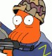
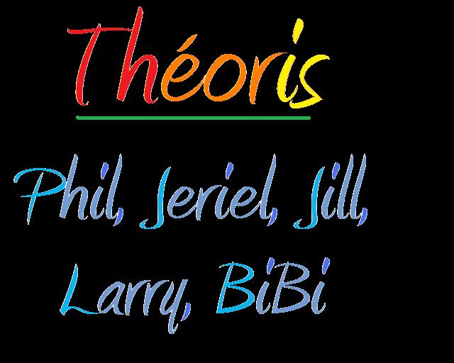

Forums galactiques > Taverne galactique : lieu de discussion informel > KALAMAR VII et l'amitier
Pages : 1
| Belzebot Réputation à la taverne : 1499  11/04 ETU 13:44 | Score : 5 Détails Sa grandiloquante et suffisance KALAMAR VII, dieu parmis les Dieus, grand protecteur de la....
Etant donné qu'il y a des commandants qui travaillent, on va passer sur l'ensemble des talents et autres dons de sa seigneurie... (non en faite ce n'est vrement pas pour vous que je fais cela, mais je n'est que huit tentacules pour ecrire...) Voila, sa grande seigneurie coyait jusqu'ici posseder tout ce dont un crabe pouvait rever... Cependant, elle c'est rendu compte recement qu'il ne lui manqué qu'une seule chose : DES AMIS :s (oui, oui, c'est vrement triste) C'est dans cette optique que sa misericordieuse grandeur va, l'espace d'un moment, oublier la superiorité que lui impose son statut de Dieu vivant, de genie, de reincarnation spirituel de mansfeld, son don d'oration expetionnel qu'il a transmis dans sa grande bonté à des commandants tel que Nicanor de Roca (nike, pour les intimes...), (nous passerons ici encore, histoire de tentacule bourrées d'artrites)... Pour faire court, nous avons decidé d'envoyer une planete et un calin à chaque commandant qui temoignera ici meme de son amour envers KALAMAR VII... (dans la limite des stocks disponibles (pour les calins, pas pour les planetes...)) Messieurs, à vos amours... Qui à dit que l'amitier et l'amour ne s'achetait pas ?! Ps: Par amour de KALAMAR VII, mettez y les formes... ^^ | ||
| Académie Théoris Réputation à la taverne : 29  11/04 ETU 14:22 | Score : 8 Détails Toute l'académie était présente sauf l'assossiation des CP (contre piscivore, car comme chacun sait le calamar est un piscivore...)Bon revenons au sujet.
Voici une poésie de l'une de vos admirattrice faisant partie du comité WLC (We Love Calamar)par Jade Aurlamoket Tout a commencé quand ton regard de poulpe a croisé mes yeux, Tu a renversé mon coeur avec es longues tentacules, tu l'a fait chaviré. Un vent d'amour à senteur de crevette m'a fait perdre la tête Notre histoire est née pour ne pas qu'elle s'arrête. Notre amour grandit de jour en jour surtout pour moi, les autres membre du comité ne font sa que pour la remise au Super Üû sur les morceau de calamar séchés Je te laisse entrer et ferme mon coeur à double tour avec tes superbe ventouses. Tout deviens beau et merveilleux Quand je vais me noyer au large de tes yeux rouge comme le mélange de la peinture du fils à la voisine Des sentiments encore ignorés se sont crées entre tes tentacules et mes bras Il faut les conserver et ne jamais les briser. Dans tes dix tentacules je pars m'envoler Dans un monde doux et sucré de crevette et de crustacés La flamme de mes yeux s'est allumée Le soir ou mes lèvres et ton bec se sont touchées. Aujourd'hui le destin nous appartient A nous seul de savoir prendre le même chemin. Je préfererais à la terre ferme car je ne réspire pas sous l'eau Mon amour pour toi est le plus grand comme les tentacules d'un calamar géant. Je n'ai aucun doute sur mes sentiments envers un céphalopode. Je ne vous siterais point toutes les milliers d'autres poésie que nous avons en stock Merci Jade. | ||
| Larry Winthorpe Réputation à la taverne : 2277  11/04 ETU 15:28 | Score : 4 Détails "Je suis heureux d'avoir assez de planètes et d'argent pour subsister à mes besoins !
Le jour où S.A.R.A. tapinera n'est pas encore venu (Oui, je sais, nombre d'entre vous vont être déçus par cette affirmation, mais j'y tiens. Non, Andrew, pas la peine d'insister, c'est non !) !" | ||
| Nezhal Réputation à la taverne : 923  11/04 ETU 15:55 | Score : 3 Détails Vous voyez Sieur Kalamar, je vous l'avais dit ! Nous sommes au dessus des besoins ! Nous croulons sous les £eems à tel point que la plupart d'entre nous en est presque blasé !!!
Pas moi je vous assure ;) | ||
| Belzebot Réputation à la taverne : 1499 11/04 ETU 19:55 | Score : 0 Détails Academie theoris, sa grandiloquante seigneurie, pleine de bravitude, vous envoit votre dû au plus vite...
| ||
| Mistermore Réputation à la taverne : 550  11/04 ETU 20:10 | Score : 0 Détails Mon cher ami Kalamar VII,
Vous savez bien que je vous porte haut dans mon estime. Maintenant que la déclaration est faite, j'aimerais bien récupérer mes planètes puisque apparemment vous en avez trop!!! :) Humour, humour,...pas si sur... | ||
| Académie Théoris Réputation à la taverne : 29 11/04 ETU 20:36 | Score : 0 Détails Désolé Kalamar VI mais vousne vous adressez pas à une académie mais à Jill ou à Jade Aurlamoket à la rigueur...Parler à un batîment ou a une institution ne me semble pas de l'intelligence de votre "grandiloquence"^^
| ||
| Belzebot Réputation à la taverne : 1499 11/04 ETU 21:25 | Score : 0 Détails Cher commandant mistermore, je vous en envoi une pour commencer... :).
Pour la suite cher ami, ne doutez pas que personnelement les insurections pesent à sa sainteté :), et qu'elle ne demande pas mieux que de vous rendre les planetes dont il est question car elle se sens veritablement coupable à votre egard. KALAMAR VII ne souhaité en aucune façon trahir notre estime mutuel... Cependant sa misericordieuse grandeur est tiraillé entre diverses allégeance... Soyez assurer neanmoins que toutes les pinces, tentacules, et autres organes, seront utilisé pour influencer favorablement la resolution du different avec qui vous savez :), dés que celui ci sera rentré de vacance :) Excusez sa grandeur pour cet aparté personnel, et continuez donc tous à temoigner de votre amour incontrolable pour KALAMAR VII | ||
| Académie Théoris Réputation à la taverne : 29 11/04 ETU 22:46 | Score : 2 Détails On ne peut plus les retenir ! Voici maintenant Jade Aurlessushi
Je respire l'odeur de plancton de ton corps de céphalopode. Tu m'embrasse et vois s'afficher un sourire radieux Sur mon visage éclairé d'une exquise lumière des poissons mangeur de poulpes des profondeur. Celle que m'offre tes yeux plancton rose. L'élixir de ta bouche de mangeur de crevette où l'amour se propage le parfum crevette-mayo Et de part en part enveloppe mon visage d'une douce odeur de fruit de mer asséchés Rempli à jamais mon coeur de douceur Et vers toi mes désirs de mangeage de crusté-céphalopode partent sans peur. J'aime voir tes tentacules frémir avec ton âme Quand dans le mien ton corps se noie Et boire ton souffle comme une offrande à poséidon Ainsi nous sommes réunis en une parfaite harmonie : femme-calamar Puis, quand la nuit voluptueuse pénètrera les cieux, Que tu dormiras paisiblement à l'ombre de mes seins, Je déposerai, éternel et muet, un baisé pateux et baveux Sur les lèvres calamardeuse de ton sommeil poulpin. Merci Jade ! Bon les adoratrice de calamar, va falloir vous calmer !Il est marié a une poulpe ! enfin je crois ...! |
Pages : 1
Forums galactiques > Taverne galactique : lieu de discussion informel > KALAMAR VII et l'amitier